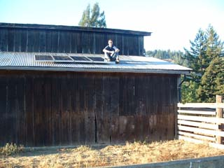

|
Home
Planning
Installation
Reflections
Resources
Update: 2007 | |
| At Humboldt State University, during the Spring Semester of 2005, I took Engineering 305: Appropriate Technology taught by Lonny Grafman. One requirement of the class was a large-ish project implementing an appropriate technology followed up by a report of one form or another. My Dad offered to fund the installation of a small off-grid photovoltaic system for the barn on his partner's property. I took him up on the offer but had to take an incomplete because parts had not arrived in time. We later learned that the parts had actually arrived but had been cannibalized to other peoples' systems. In the end, my Dad went to the distributor and picked up what he could. Over time, we acquired enough pieces to complete the project. I chose, obvioulsy, a website as the form my report would take. The 1.5 kW system is up and running as of August 6, 2005.
|
|